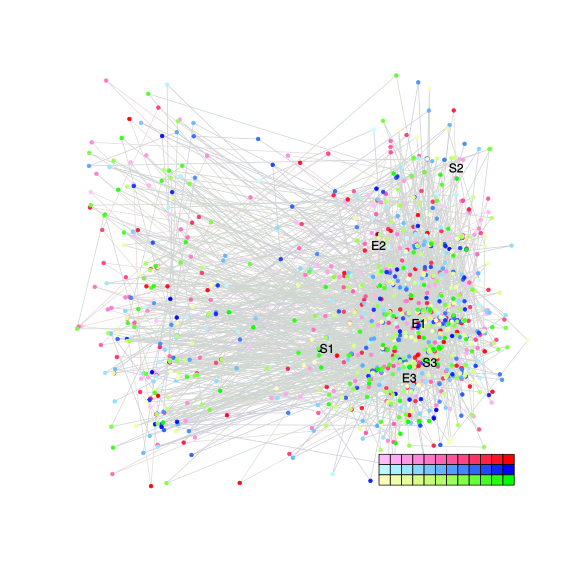
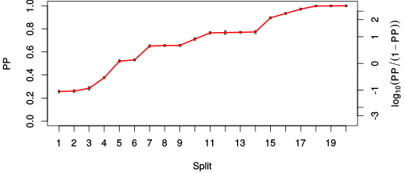
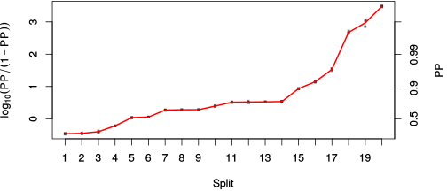

| chain # | burnin | subsample | Iterations (remaining) | command line | subdirectory | directory |
|---|---|---|---|---|---|---|
| 1 | 10000 | 1 | 90000 | /usr/local/bali-phy-3.0-beta2/bin/bali-phy E7_AA_red3_v2_Lambda_Alpha_all4Manatees_BetaGamma.fas -s 10923 -n E7_AA_red3_v2_Lambda_Alpha_all4Manatees_BetaGamma_c1 | E7_AA_red3_v2_Lambda_Alpha_all4Manatees_BetaGamma_c1-1 | /home/willemse/data/trees/BaliPhy/E7/red3_v2 |
| 2 | 10000 | 1 | 90000 | /usr/local/bali-phy-3.0-beta2/bin/bali-phy E7_AA_red3_v2_Lambda_Alpha_all4Manatees_BetaGamma.fas -s 73628 -n E7_AA_red3_v2_Lambda_Alpha_all4Manatees_BetaGamma_c2 | E7_AA_red3_v2_Lambda_Alpha_all4Manatees_BetaGamma_c2-1 | /home/willemse/data/trees/BaliPhy/E7/red3_v2 |
| 3 | 10000 | 1 | 90000 | /usr/local/bali-phy-3.0-beta2/bin/bali-phy E7_AA_red3_v2_Lambda_Alpha_all4Manatees_BetaGamma.fas -s 59393 -n E7_AA_red3_v2_Lambda_Alpha_all4Manatees_BetaGamma_c3 | E7_AA_red3_v2_Lambda_Alpha_all4Manatees_BetaGamma_c3-1 | /home/willemse/data/trees/BaliPhy/E7/red3_v2 |
| P(data|M) = -4020.150 +- 0.397 | Complete sample: 50940 topologies | 95% Bayesian credible interval: 38915 topologies |
Phylogeny Distribution

| Partition support: Summary |
| Partition support graph: SVG |
{kind=link}
| 50% consensus | Newick (+PP) | SVG | |||||
| 66% consensus | Newick (+PP) | SVG | |||||
| 80% consensus | Newick (+PP) | SVG | |||||
| 90% consensus | Newick (+PP) | SVG | |||||
| 95% consensus | Newick (+PP) | SVG | |||||
| 99% consensus | Newick (+PP) | SVG | |||||
| 100% consensus | Newick (+PP) | SVG | |||||
| MAP | Newick (+PP) | SVG | |||||
| greedy | Newick (+PP) | SVG |
{kind=link}
{kind=link}
{kind=link}
{kind=link}
{kind=link}
{kind=link}
{kind=link}
{kind=link}
Alignment Distribution
Partition 1
| Diff | Min. %identity | # Sites | Constant | Informative | ||||
|---|---|---|---|---|---|---|---|---|
| Initial | FASTA | HTML | Diff | 1.71% | 117 | 1 (0.855%) | 111 (94.9%) | |
| Best (WPD) | FASTA | HTML | AU | 9.84% | 239 | 6 (2.51%) | 111 (46.4%) |
Mixing
{kind=link}
{kind=link}
| burnin (scalar) | ESS (scalar) | ESS (partition) | ASDSF | MSDSF | PSRF-CI80% | PSRF-RCF |
|---|---|---|---|---|---|---|
| 714 | 2565 | 1793.293 | 0.005 | 0.011 | 1.001 | 1.005 |
Projection of RF distances for the first 3 chains3D | Variation of split PPs across chains |
Scalar variables
| Statistic | Median | 95% BCI | ACT | ESS | burnin | PSRF-CI80% | PSRF-RCF |
|---|---|---|---|---|---|---|---|
| prior | -404.1 | (-458.1, -355.2) | 41.03 | 6581 | 164 | 0.9996 | 0.9973 |
| prior_A1 | -453.5 | (-504.6, -406.9) | 32.36 | 8343 | 264 | 0.9997 | 0.9993 |
| likelihood | -3989 | (-4019, -3960) | 75.82 | 3561 | 264 | 0.9998 | 0.9983 |
| logp | -4393 | (-4440, -4351) | 31.53 | 8562 | 340 | 0.9999 | 0.9991 |
| Heat.beta | 1 | ||||||
| Scale1 | 10.56 | (7.027, 15.02) | 1.081 | 249873 | 155 | 1 | 0.9991 |
| S1.F.pi.A | 0.06208 | (0.04857, 0.07667) | 8.235 | 32786 | 209 | 0.9998 | 1 |
| S1.F.pi.R | 0.05521 | (0.04055, 0.07113) | 9.766 | 27648 | 281 | 1 | 1.002 |
| S1.F.pi.N | 0.03394 | (0.02407, 0.04494) | 8.445 | 31970 | 334 | 1 | 0.9949 |
| S1.F.pi.D | 0.06102 | (0.04657, 0.07646) | 18.2 | 14834 | 452 | 0.9996 | 1.003 |
| S1.F.pi.C | 0.04552 | (0.03062, 0.06215) | 7.861 | 34348 | 285 | 1 | 1.005 |
| S1.F.pi.Q | 0.04965 | (0.03843, 0.06154) | 8.705 | 31018 | 196 | 1 | 0.9977 |
| S1.F.pi.E | 0.08134 | (0.06468, 0.09932) | 9.354 | 28865 | 699 | 0.9998 | 1.001 |
| S1.F.pi.G | 0.07912 | (0.05879, 0.1003) | 8.742 | 30884 | 280 | 1 | 1.003 |
| S1.F.pi.H | 0.03143 | (0.02147, 0.0425) | 9.15 | 29507 | 344 | 1 | 0.9995 |
| S1.F.pi.I | 0.04469 | (0.03338, 0.05659) | 9.899 | 27275 | 415 | 1 | 1.001 |
| S1.F.pi.L | 0.09415 | (0.07379, 0.1156) | 12.15 | 22214 | 216 | 1 | 0.9994 |
| S1.F.pi.K | 0.02869 | (0.01996, 0.03829) | 8.14 | 33170 | 333 | 1 | 0.9983 |
| S1.F.pi.M | 0.005079 | (0.00202, 0.009053) | 7.943 | 33991 | 411 | 0.9998 | 1.001 |
| S1.F.pi.F | 0.03712 | (0.02499, 0.05045) | 10.12 | 26668 | 410 | 1 | 0.9979 |
| S1.F.pi.P | 0.04671 | (0.03212, 0.06328) | 25.96 | 10400 | 392 | 1 | 1.003 |
| S1.F.pi.S | 0.06493 | (0.0511, 0.07967) | 8.47 | 31877 | 587 | 1 | 0.999 |
| S1.F.pi.T | 0.06144 | (0.04691, 0.07668) | 9.846 | 27421 | 397 | 1 | 1 |
| S1.F.pi.W | 0.002194 | (5.963e-05, 0.006272) | 9.736 | 27733 | 343 | 1.001 | 1.002 |
| S1.F.pi.Y | 0.03723 | (0.02437, 0.05112) | 11.69 | 23091 | 675 | 1 | 1.002 |
| S1.F.pi.V | 0.07225 | (0.05679, 0.08832) | 10.72 | 25180 | 382 | 0.9999 | 1.005 |
| I1.RS07.meanIndelLengthMinus1 | 2.018 | (1.334, 2.857) | 8.219 | 32851 | 223 | 1 | 0.9984 |
| I1.RS07.logLambda | -3.714 | (-4.034, -3.404) | 6.112 | 44172 | 168 | 1 | 1.002 |
| |A1| | 218 | (200, 236) | 105.3 | 2565 | 653 | 0.9583 | 1.003 |
| #indels1 | 61 | (53, 70) | 22.02 | 12262 | 258 | 0.9091 | 1 |
| |indels1| | 183 | (157, 213) | 53.92 | 5007 | 167 | 0.973 | 0.9992 |
| #substs1 | 777 | (757, 795) | 101.6 | 2657 | 714 | 1 | 1.004 |
| Scale1*|T| | 13.18 | (12.01, 14.41) | 4.31 | 62642 | 247 | 0.9999 | 1.001 |
| |A| | 218 | (200, 236) | 105.3 | 2565 | 653 | 0.9583 | 1.003 |
| #indels | 61 | (53, 70) | 22.02 | 12262 | 258 | 0.9091 | 1 |
| |indels| | 183 | (157, 213) | 53.92 | 5007 | 167 | 0.973 | 0.9992 |
| #substs | 777 | (757, 795) | 101.6 | 2657 | 714 | 1 | 1.004 |
| |T| | 1.248 | (0.8271, 1.741) | 1.004 | 268984 | 67 | 0.9998 | 0.9986 |